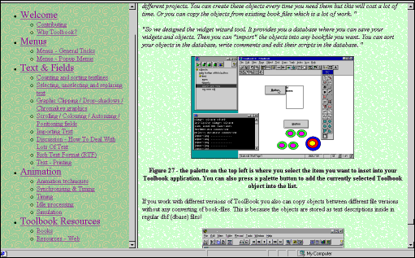

|
|
Online Toolbook Tips - edited - hundreds of them!Some with animated GIF videos of Toolbook authors doing their thing. Browse it and solve your Toolbook problems - and extend your Toolbook knowledge. Features
 Check out the magazine now! - Go to www.atug.com/toolbookmag
|
Australian Toolbook User Group
www.atug.com/toolbook
|